A Internet e a Web
Conhecer a Internet
-
Endereços IP
Endereço PC
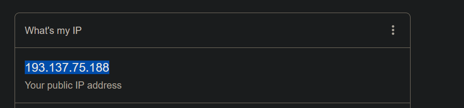
Mapa IP PC
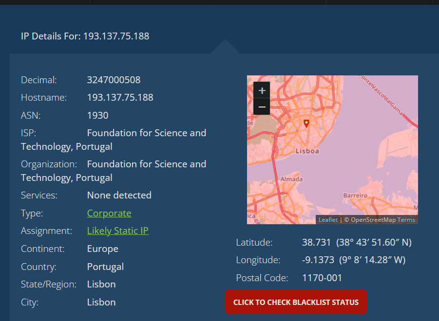
Endereço IP Telemovel
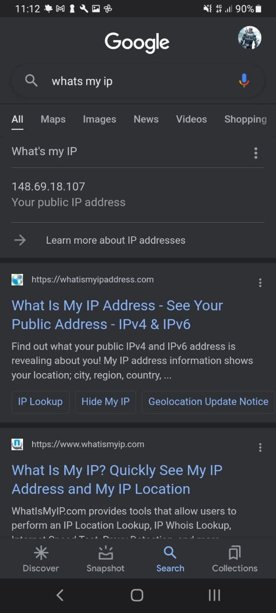
Mapa IP Telemovel
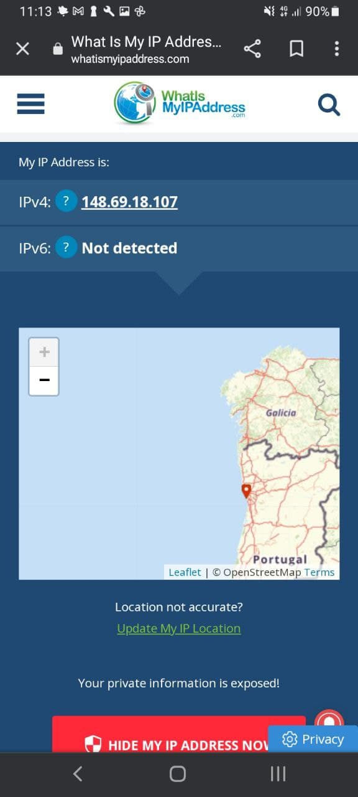
Endereço IP Servidor Heroku
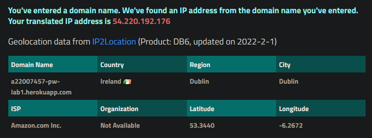
Mapa IP Servidor Heroku
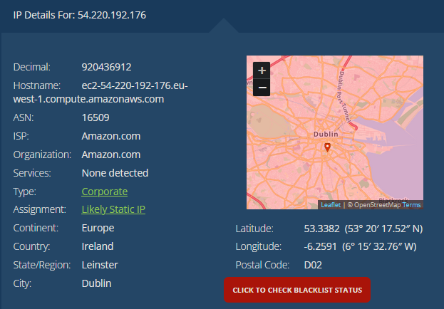
-
Percurso
Traceroute do Servidor Heroku
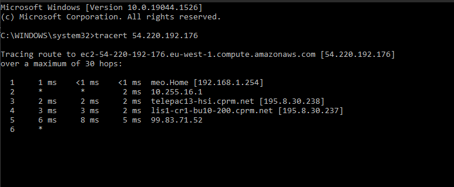
GeoTraceroute
- #1 PT- Prior Velho (0 km)
- #2 PT- Lisbon (8 km)
- #3 DE-Frankfurt (1879 km)
- Distância Real 1873 km
- Paises : 2
Globo GeoTraceroute
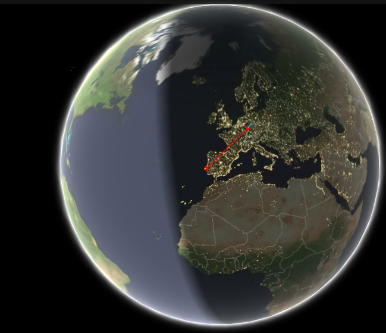
Acesso via HTTP à minha página Web
HTTP
Codigo fonte da pagina
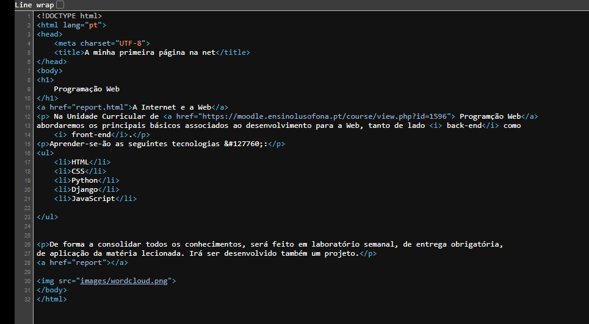
Inspect
Exemplos da inspeção da pagina
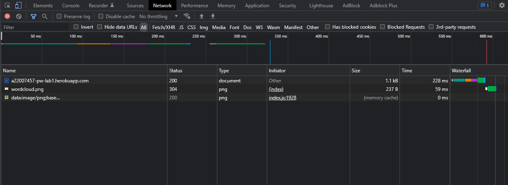
Ao selecionar a barra network do browser, é possivel observar os tipos de ficheiros que constituiem a pagina do site ,
bem como os seus tempos de espera e de descarga.
- Preview- Mostra uma previsualização do ficheiro ou da pagina em si
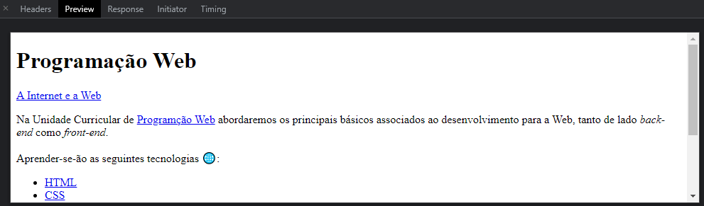
- Headers- Mostra informações sobre o pedido que foi feito pelo o cliente ao servidor onde está localizado o ficheiro
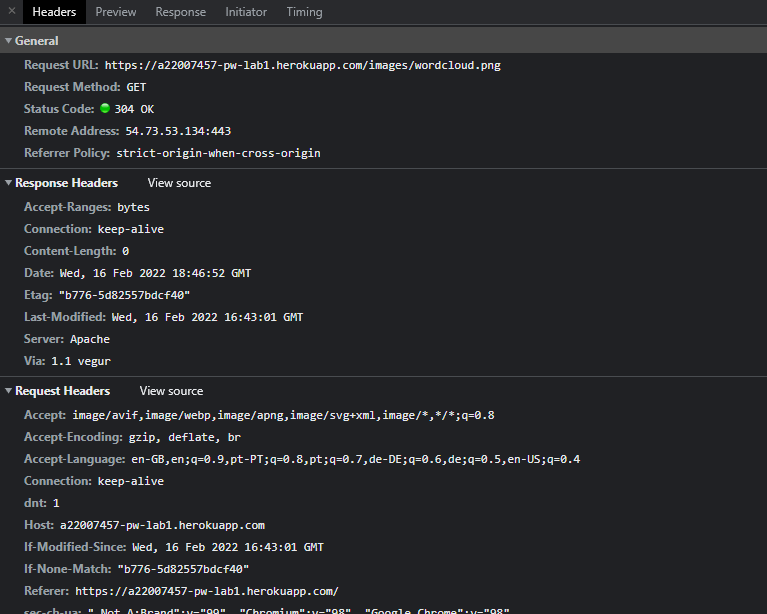
- Timing- Mostra os timings do ficheiro
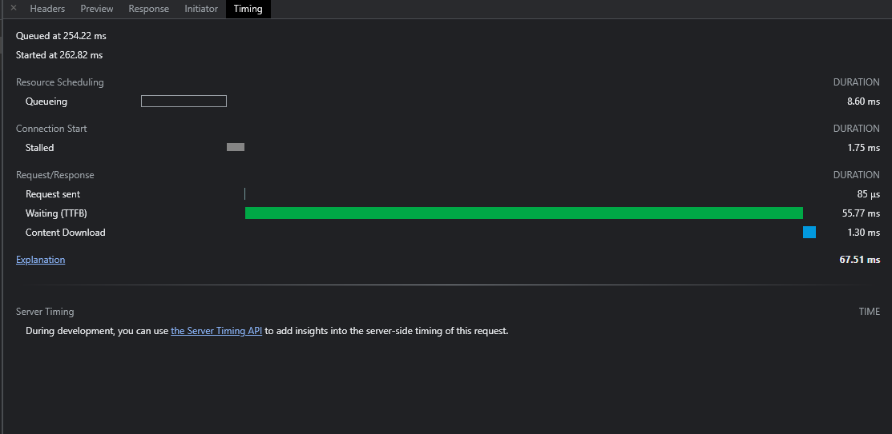